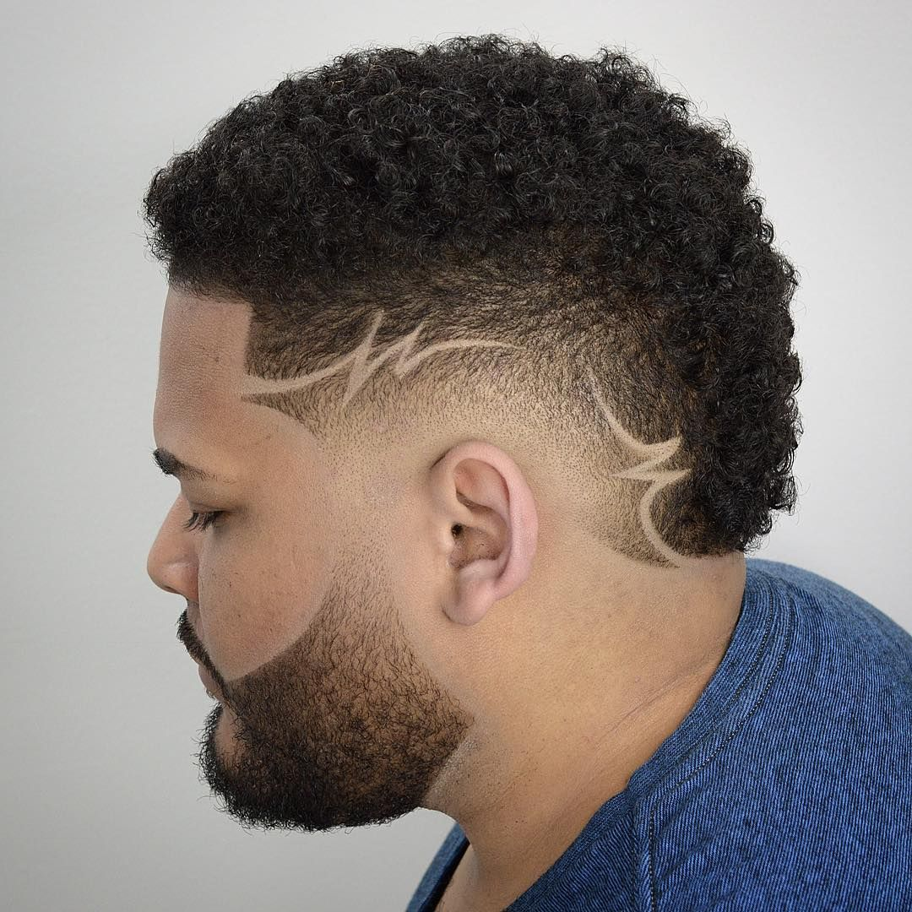

Somos una pequeña empresa familiar dedicada a brindarte el mejor servicio para tu comodidad. Podes encontrarnos en Alvear 123, La Tablada, Buenos Aires. Nuestros horarios de atencion son de martes a sabados de 10:00 am a 14:00 pm y de 16:00 pm a 20:00 pm.
Caracterizado por una transición gradual de longitud desde la parte inferior hasta la superior creando una apariencia más limpia y definida. Este corte es tendencia entre los niños y jovenes.
Si te gusta algo mas arriesgado, este corte es para vos. Actualmente es muy común verlo en varios artistas destacados del reggaeton latino y futbolistas de la elite. Se trata de realizar dibujos y lineas sobre el degradado.
